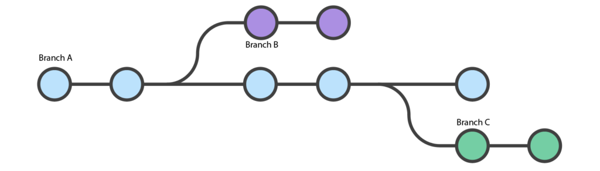

O que são Branches?
São ramificações que podem te auxiliar em um novo projeto, você pode fazer modificações sem alterar todo seu projeto principal, que chamamos de Main, como as ramificações são branches, poderiamos dizer que o Main é o tronco do seu projeto! Não é interessante para você fazer novas alterações diretamente no "tronco" ou main porque caso algo não saia como planejado você terá que alterar tudo novamente, além disso podemos separar areas de uma empresa, por exemplo: pode ter uma branch para estilo e uma para conteúdo, igual eu testei fazer aqui.
Você pode aprender sobre branches lendo nesse site ou assistindo esse vídeo, dois conteúdos que me ajudaram muito.